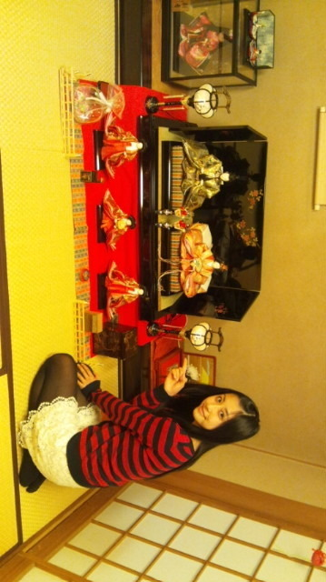
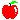
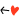

| 2012/03 03 Sat | ひなまつりはのぎまつりー♪( |
灯りをつけましょ
ひなまつりー
お花をあげましょ
ひなまつりー
ごにんばやしの笛太鼓
今日は楽しい
あくしゅかいー


(//ω//)
とゅーことで
今日は、乃木坂46初の
全国握手会
inよみうりランド！
いえーいっＯ(
*
≧∇≦
*
)Ｏ
皆さん楽しかったですかあ？

ちはるは超絶楽しかった！
(ゝω・´
★
)
さゆりんご

と一緒のレーンだったんだよ(
o
^^
o
)/
さゆりんご
楽しかったねー((はあと
でもねー、
さゆりんご
がずっとぴょんぴょんしててちはるそこまでぴょんぴょんしてなかったから
なんかテンション低くみられたんぢゃないかなぁ...(；´д⊂)
ってちょっと心配だったんだけどー(´・ω・｀)
大丈夫だったかな
テンションまっくすだったんよっ(ゝω・´
★
)ういんく
初ライブもすっごい
楽しかったー(
o
≧ω≦
o
)
盛り上がったー(
o
≧ω≦
o
)
やばかったー(
o
≧ω≦
o
)
高山ったあー(
o
≧ω≦
o
)
みんなありがとう！
あと今日初披露だったわたしたちの歌、
左胸の勇気
！
どぉでしたかぁー？(。・∀・。)ノ
ぐるカーとは違って、激しく、元気な踊りになってます
★
ありがたいことに、
スカパー！Ｊリーグ２０１２のオフィシャルサポーターに任命していただいたので！(*^o^)／＼(^-^*)
この左胸の勇気で、精一杯盛り上げていきたいっ(//ω//)
頑張るね！
あぁー

今日の握手会＆ライブ楽しすぎたっ！(σ
*
´∀｀)
ありがとぉ
///
今日残念ながら来られなかった方(´；ω；`)
また全握も名古屋と大坂であるし！
個握も東京と名古屋と大坂であるし！
またそのとき会いましょお∩ω∩はあと
Ｑ＆Ａだぜぃっ
(古いのとか混ざってるけど気にしないでね>ω<)
Ｑ メイク道具はどこの？
つけましたことあるー？
Ａ 基本平日とかもメイクしないんからよくわかんないんだょねー(>o<")
勉強しなきゃっ！
つけまもしたことないなぁ(´・ω・｀)
Ｑ 中学校生活の一番の思い出は？
Ａ やっぱりベタに修学旅行

ベタに奈良、京都！
超楽しかった♪(ｏ・ω・)ノ))
Ｑ アトラクションで絶叫系と恐怖系は平気？
Ａ 絶叫系とかは大好きすぎてやばいですー(*゜Q゜*)笑
最近乗れてないんだよね
恐怖系は無理。
絶対に無理。
((((；゜Д゜)))オォコワ
Ｑ 雑誌とか読んでる？
Ａ 読んでるよー(*^_^*)
付録が好きでよくいろいろ買うけど
必ず毎月Seventeen買ってる
Ｑ 好きな服のテイストは？
Ａ 結構がーリー系の大人かわいい服が好きだよ！(σ*´∀｀)
Ｑ 柿ピーは好きですか？
Ａ 好きだぁよ♪
新潟のお土産に柿チョコ買って帰ったー
今日はこのへんで∩ω∩
これからちょっとずつ返していくね！♪(/ω＼
*
)
あっ
いくちゃんのスプーンはただ単に柄が可愛かったかららしいですよ...(；´д⊂)
意外と普通だった。
( ´艸｀)笑
ぢゃあっ
ばいるんっ
ちはるんっ
♪(ｏ・ω・)ノ))
コメント(67)
2012/03/03 23:42